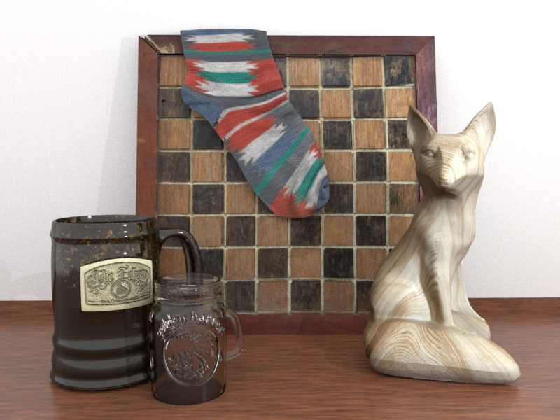
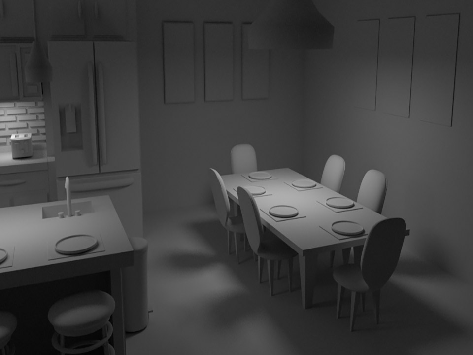
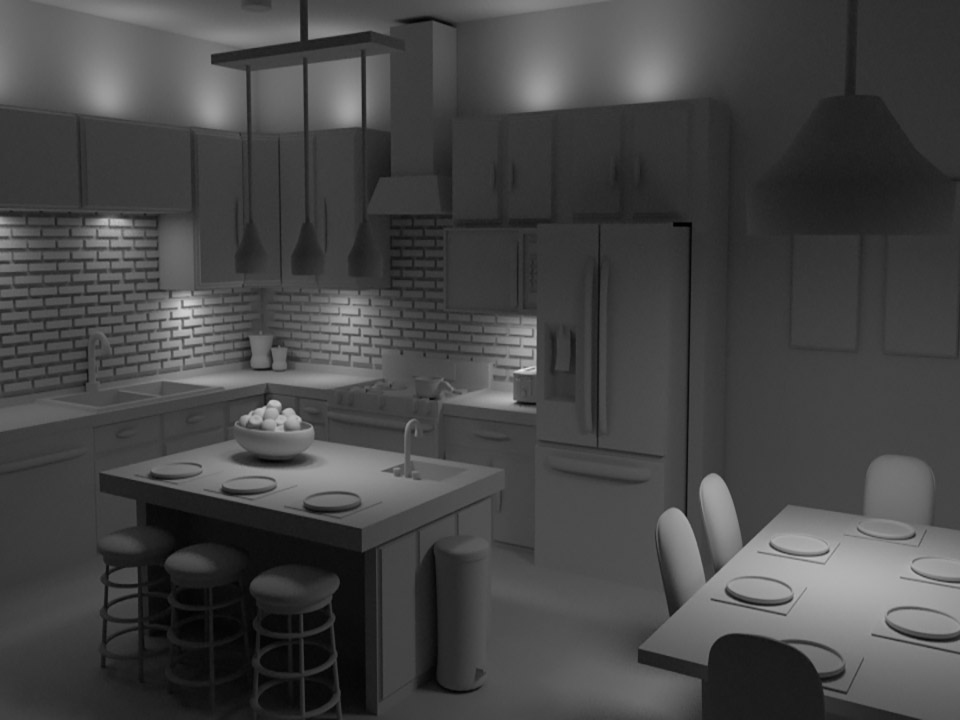
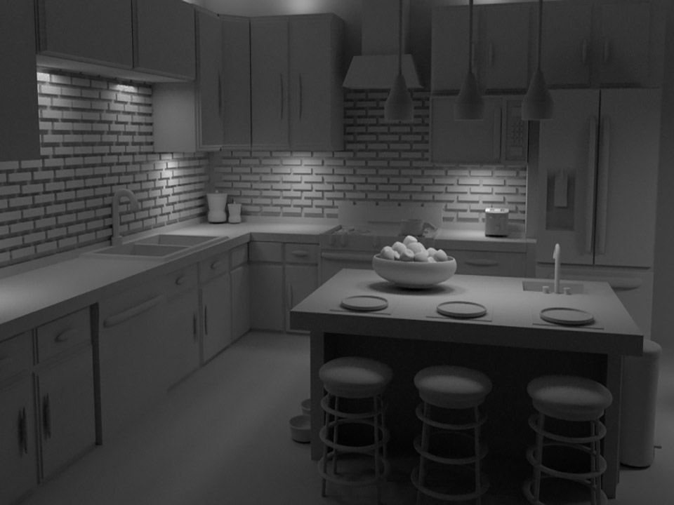
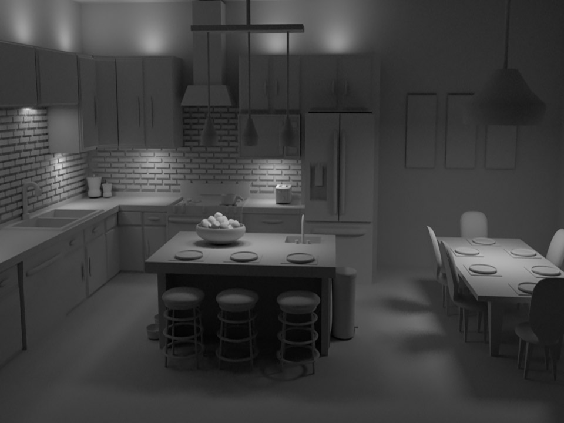
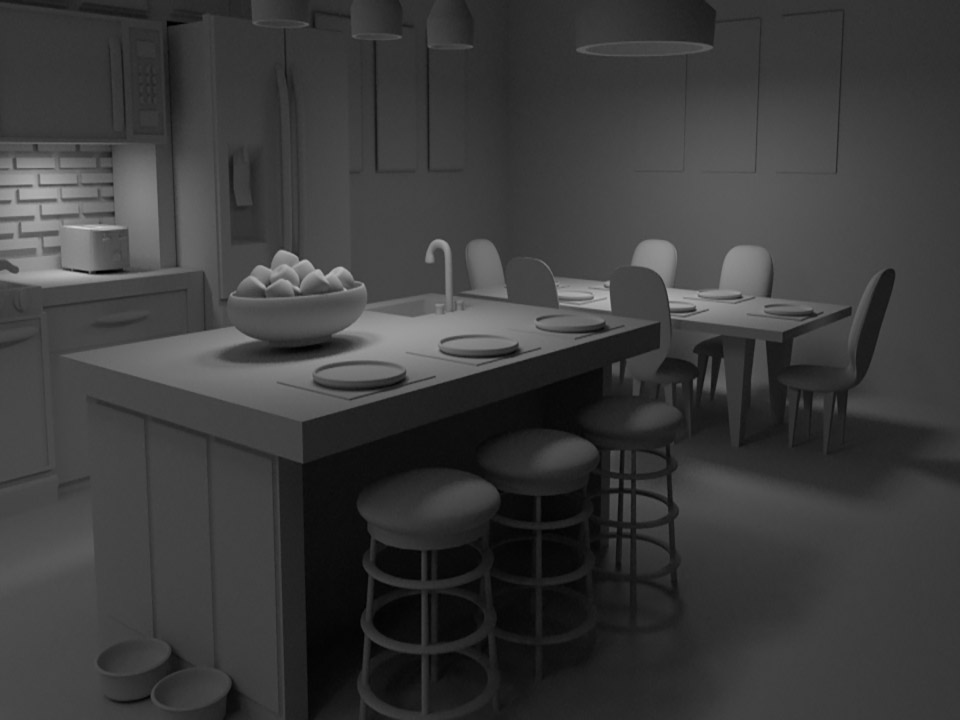

3D Models
These models were all built using Autodesk Maya.

The models in this render were modeled by my classmates in CGT 341. All objects were unwrapped by me in Roadkill. All textures were created by me in photoshop and applied in Maya. This image was lit and rendered by me using Arnold.

Every object in this was modeled, unwrapped, and lit by me in Maya. Rendered in Arnold.

This is an interior environment scene. Every object in this was modeled, unwrapped, and lit by me using 14 lights in Maya as a final project in CGT 341. Rendered in Arnold.

Every object in this was modeled, unwrapped, and lit by me in Maya. Rendered in Arnold.

Every object in this was modeled, unwrapped, and lit by me in Maya. Rendered in Arnold.

Every object in this was modeled, unwrapped, and lit by me in Maya. Rendered in Arnold.